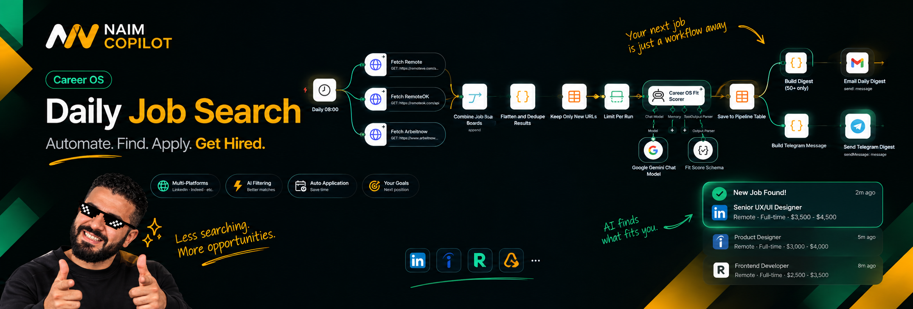

Back
to work
AI AUTOMATION · JOB SEARCH · SCORING
Career OS · Daily Job Search
An automated career-search workflow that collects opportunities, removes duplicates, scores fit and sends a focused daily digest.

THE CHALLENGE
A clear problem deserves a clear product response.
How can repetitive job searching become a consistent pipeline where relevant roles are collected, evaluated and prioritized automatically?
WHAT I DID
From ambiguity to a usable system.
- Combined multiple remote job sources.
- Flattened and deduplicated results to keep only new URLs.
- Used an AI scoring step to assess fit against the career profile.
- Saved results to a pipeline and delivered email / Telegram digests.
01Frame
Clarify the problem, users and constraints.
02Structure
Turn requirements into flows and product logic.
03Design
Create clear, reusable and implementation-ready UI.
04Build
Connect the design to technology and iterate.
SELECTED EVIDENCE
The work behind the interface.
TECHNOLOGY
n8nGoogle GeminiJob
APIsPostgreSQLAI
scoringEmailTelegram